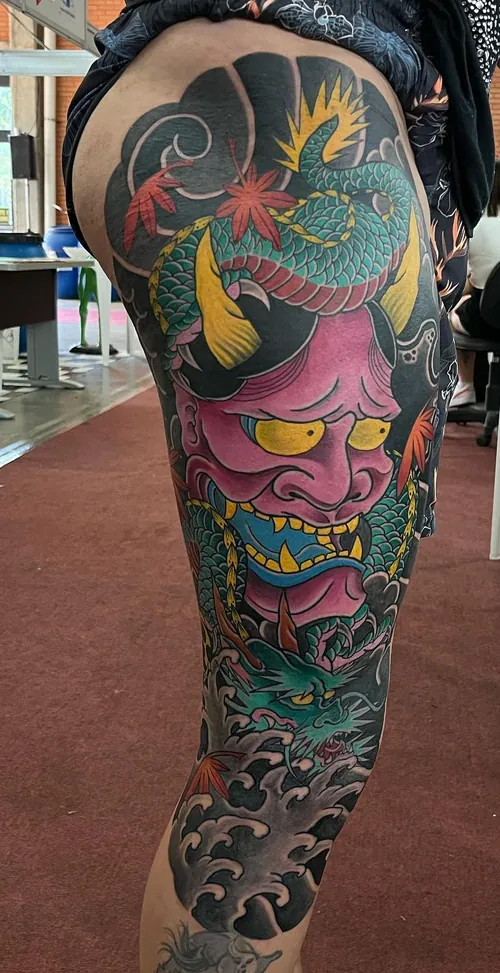
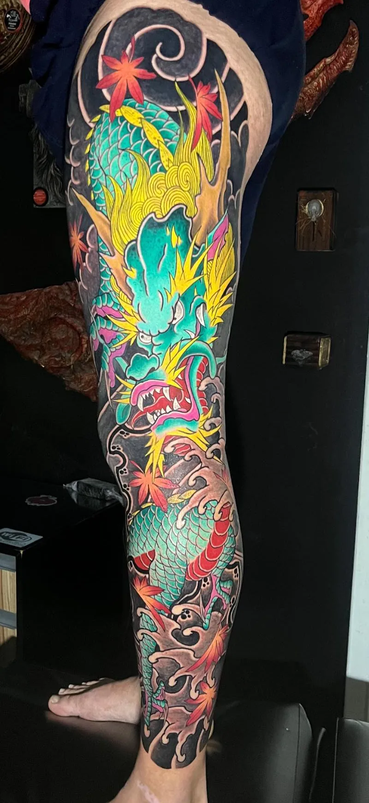
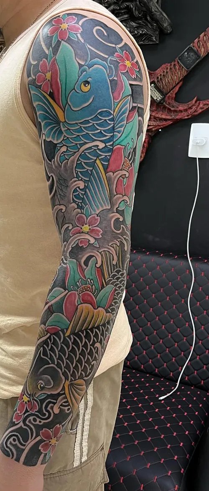
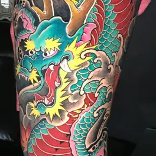
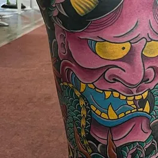
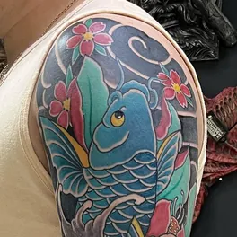
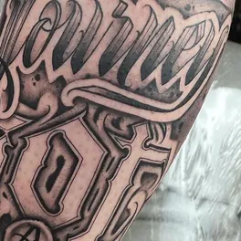
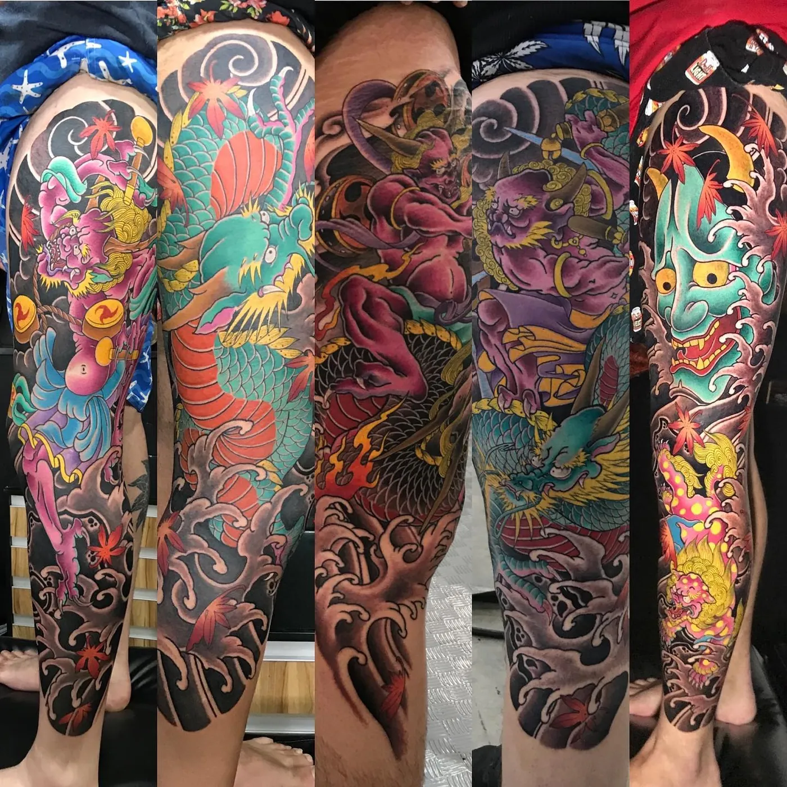
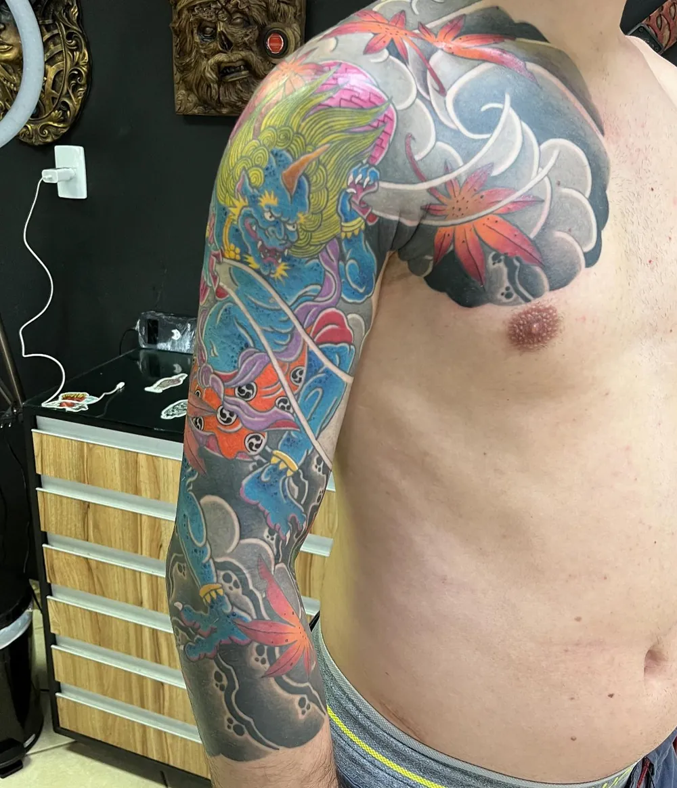

Tatuagem japonesa em cor cheia, para fechar perna e braço.
Dragões, máscaras hannya, carpas e ondas que ocupam a perna ou o braço inteiro. Sid Tattoo Studio, desde 2009 na Rua Iririú, em Joinville.



O que sobe pela pele
Os temas que mais aparecem nos trabalhos do estúdio. Escolha um para ver as peças com ele.
-
Dragão
O tema que mais se repete: subindo a perna inteira, do quadril ao tornozelo, entre ondas e folhas de bordo.
Ver os dragões
-
Hannya
A máscara de chifres e olhos dourados, em rosa ou verde. Nas peças do estúdio, aparece junto de um dragão.
Ver as hannya
-
Carpa
Subindo o braço inteiro entre flores de cerejeira e água.
Ver a carpa
-
Lettering
Letras desenhadas em preto e cinza, cobrindo o antebraço.
Ver o lettering
Cinco pernas fechadas, lado a lado.
O estúdio postou estas cinco juntas: cada uma vai do quadril ao tornozelo, com o fundo escuro de ondas e nuvens ligando os desenhos.
Peça desse tamanho se planeja junto. Mande a sua ideia e o lugar do corpo pelo WhatsApp.
Ver as pernas fechadas

No estúdio
- Sid e Camila
- Os dois tatuam no Sid Tattoo Studio. Diga no WhatsApp com quem você quer fazer.
- Piercing
- O estúdio também faz piercing. Pergunte pelo WhatsApp.
- Desde 2009
- Na Rua Iririú, 2797, em Joinville.
Venha à Rua Iririú.
WhatsApp (47) 99926-4496